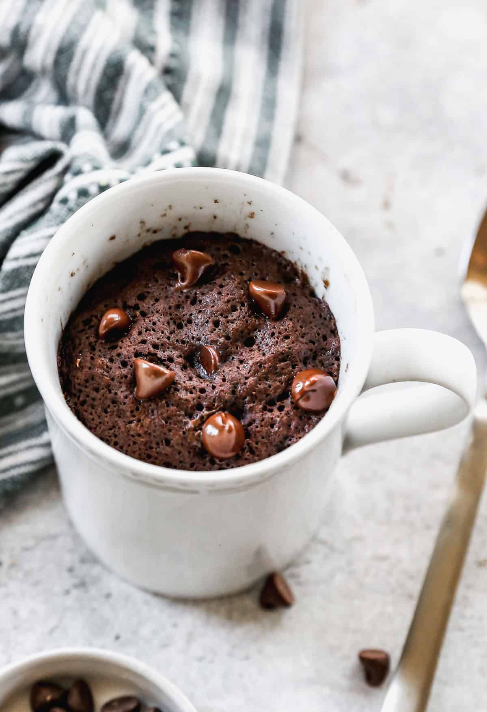

Chocolate mug cake

Quick and easy chocolate mug recipe
This super easy recipe will be the best way to finish your meal and leave you with no cravings:
Ingredients
- All-purpose flour and granulated sugar
- Cocoa powder, baking powder, and salt
- Milk
- Canola oil or melted butter
- Vanilla extract
- Chocolate chips
Steps
- Combine dry ingredients: Pour flour, sugar, cocoa powder, baking powder, and salt in your mug.
- Add wet ingredients: Pour in milk, canola oil, and vanilla extract. Stir until smooth.
- Stir in chocolate chips.
- Microwave: Cook in the microwave then let this easy chocolate mug cake rest for one minute before diving in!